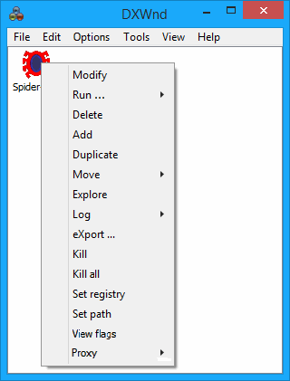

When right-clicking on the program's list, instead, the following menu will be shown: (Some of the options are only visible in Expert mode.)

|
Modify |
Allows you to view and modify the program's configuration. |
|
Run... |
Run hooked - Activates (runs) the selected task. Same as double-clicking on the list entry. Run unhooked - Runs the selected task without activating DxWnd hooking. Run suspended - For debugging inject suspended task only, runs and suspends the hooked task so that the user can safely activate a debugger and attach to the process. Once the operation is completed a click on the OK button on a dialog box will unfreeze the task. N.b. while suspended, the task stays within an endless close loop that will consume the 100% of the current CPU core, so the processor may get hot. |
|
Delete |
Asks for confirmation and then deletes the selected entry. |
|
Add |
Prompts for all data needed to define a new task in the list. |
|
Duplicate |
Duplicates or clones an entry. You can modify the clone without affecting the original. This allows you to create multiple different entries with consistent settings. |
|
Move |
This menu is equivalent to Edit > Move. Moves the selected entry in the list. |
|
Explore |
Open a window explore session pointing to the program's configured install path. |
|
Log |
This menu is equivalent to Edit > Log with a few additions for expert users. Run DebugView: runs the DebugView tool, provided that this tool is installed and reached in DxWnd path. If the tool is either absent or not in DxWnd path, an error message will appear. view Tail: runs the tail tool on the target program's logfile dxwnd.log, provided that this tool is reached in DxWnd path. The tool is part of DxWnd tools distribution, you may copy it either on DxWnd folder or on $WinDir/System32. Run "tail.exe" from a command prompt to get the command syntax: the tool can be used standalone for any generic purpose. |
|
Export... |
Exports the highlighted program configuration to a file. |
|
Kill |
Kills the corresponding program. Differently from the File -> Process -> Kill command, this command would not kill the currently active program, but the selected one, no matter whether it was managed by dxWnd or not. This is the reason why sometimes the first Kill command may fail and this one is in general more reliable, at the cost of selecting the proper entry. |
|
Kill all |
Kills all running programs. |
|
Set registry |
Saves the registy entries from Dxwnd Registry tab into a file called dxwnd.reg. |
|
Set path |
Can be used to update the path field for a configuration. You must have the game running for it to work. |
|
View Flags |
Opens a window shoving all the enabled Dxwnd Flags for the application. |
|
Proxy |
Used to setup the program to run from a proxy dll. This way Dxwnd interface does not need to be started. NOTE: Do not try to run a game with Dxwnd if it has proxy dll's installed (it usually results in a crash). NOTE: If you edit the configuration of your game you will need to remove and install the proxy again for the changes to take effect. |